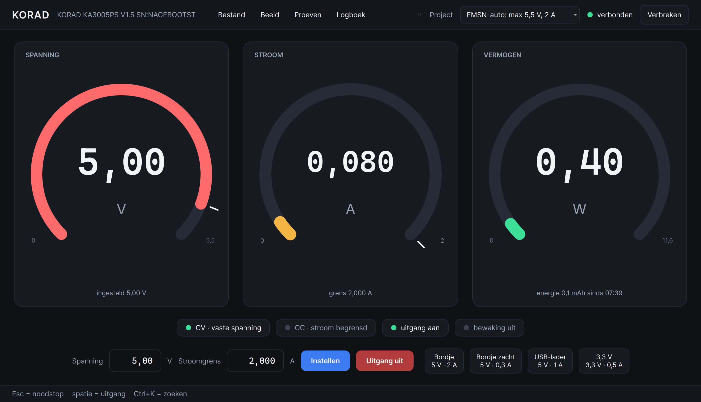
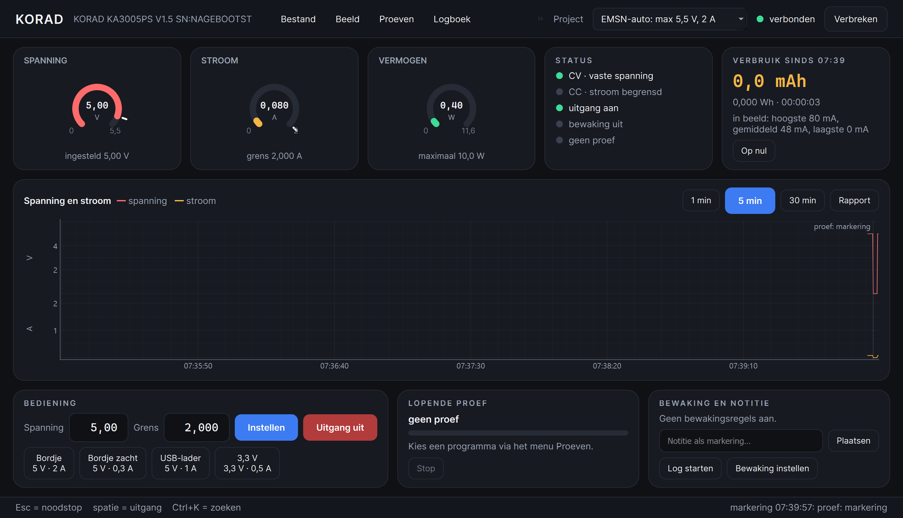
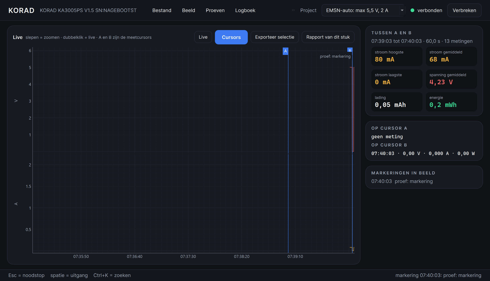
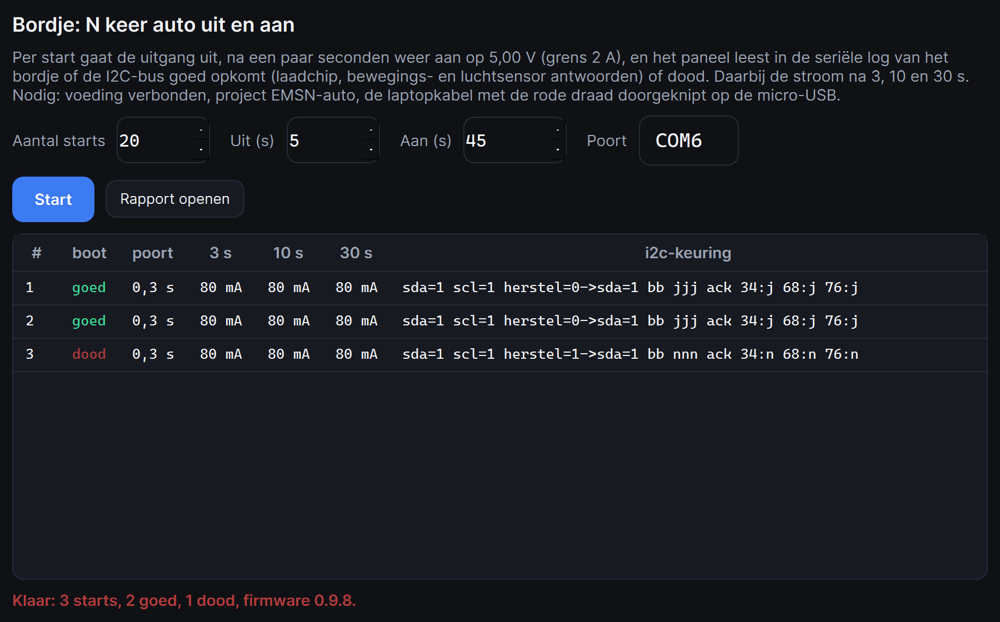
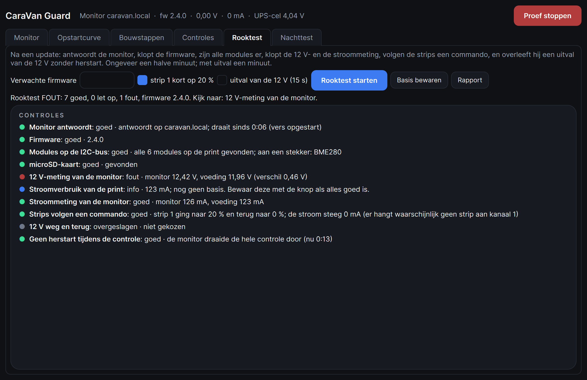
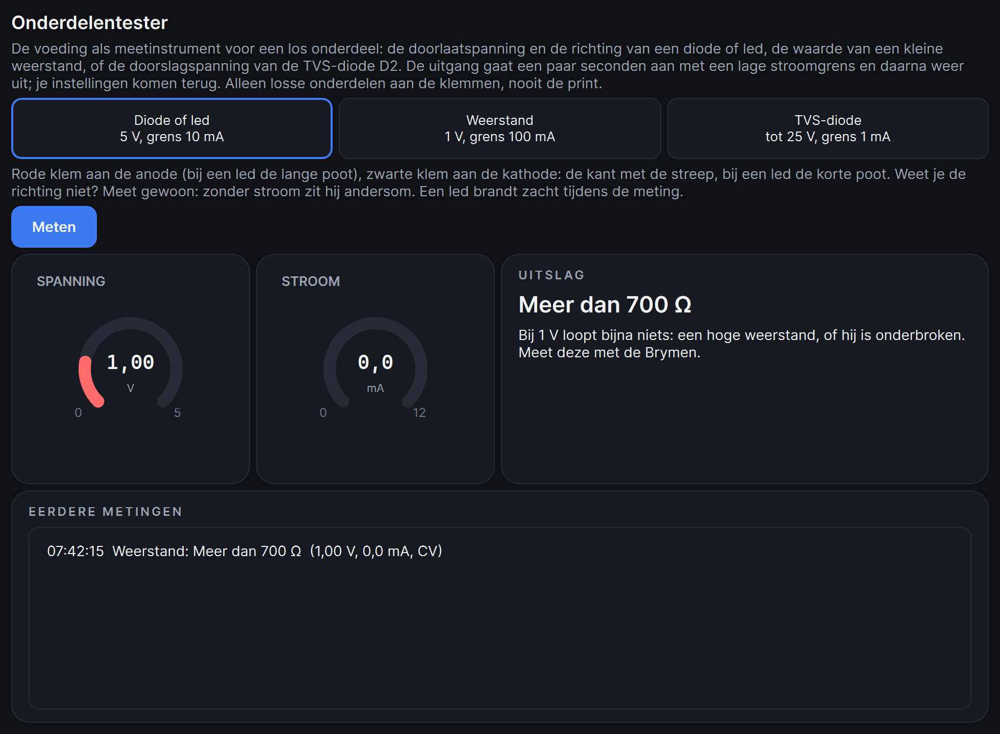
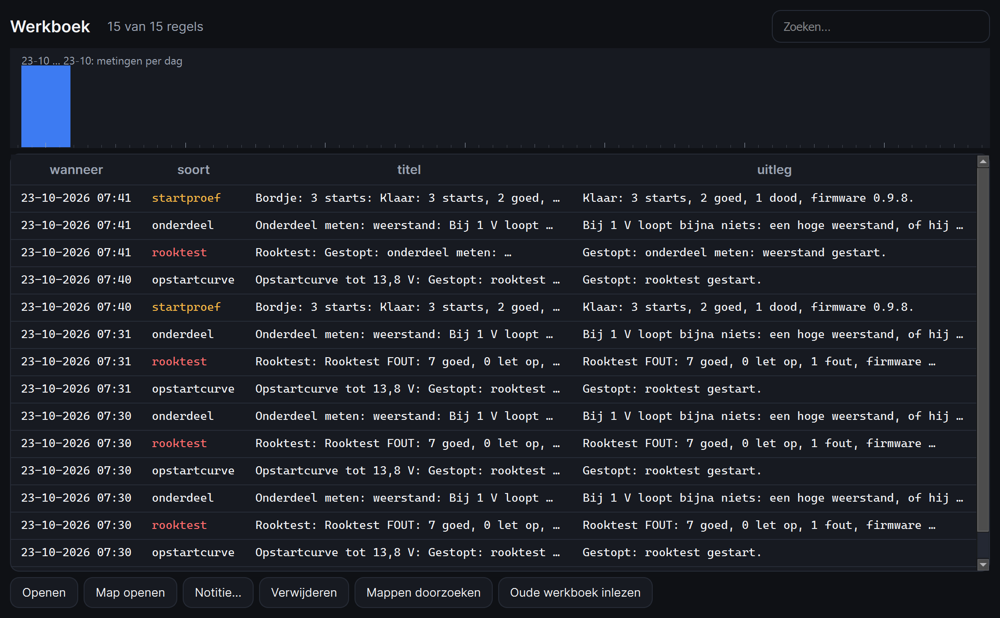
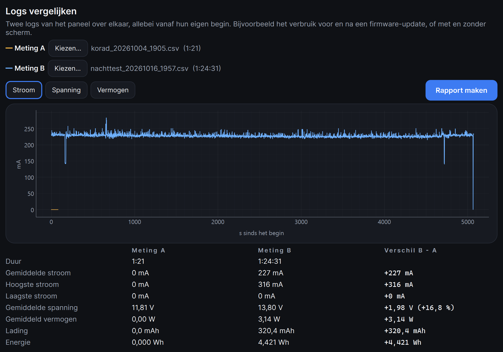
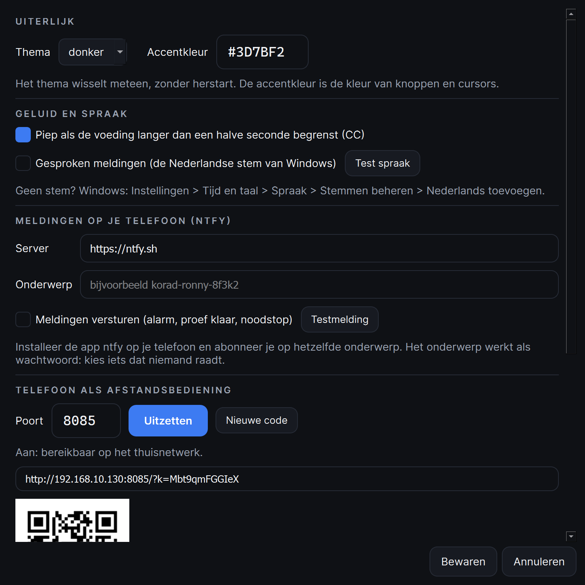

Het paneel praat via USB met de Korad (COM10) en laat spanning, stroom en vermogen zien op drie ringmeters. Alles wat de voeding gevaarlijk zou kunnen maken voor wat eraan hangt, loopt door de grens van het project (hoofdstuk 2).

Start met --nagebootst tbeam (of print, accu, kort): dan doet het paneel een voeding met die belasting na, inclusief het bordje en de CaraVan-monitor. Alles werkt, er gebeurt niets echts.
Een project is een kaartje met een naam, een maximale spanning en stroomgrens, en de reden daarvoor. Het paneel weigert alles daarboven: instellen, de vaste knoppen, programma's, accu nabootsen. Het grijpt ook in als de voeding aan de voorkant hoger wordt gezet terwijl de uitgang aan staat.
| Project | Grens | Waarom |
|---|---|---|
| EMSN-auto | 5,5 V · 2 A | de VBUS-ingang van de AXP2101 op de T-Beam verdraagt hooguit 5,5 V |
| CaraVan Guard | 15 V · 4 A | de TVS-diode D2 op de print gaat rond 17 V geleiden |
| Vrij | 30 V · 5 A | het bereik van de voeding |
De Korad start op met de spanning van de vorige keer. Daarom doet het paneel sinds 23 oktober twee dingen extra: bij het verbinden leest het meteen de instelling en zet het een te hoge spanning of stroomgrens terug naar de grens van het project, en uitgang aan wordt geweigerd zolang de instelling buiten de grens valt. Zo kan 13,8 V van de caravan nooit meer op het bordje komen.
Menu Beeld of de functietoetsen. De keuze wordt per project onthouden.
| Toets | Indeling | Waarvoor |
|---|---|---|
| F1 | Eenvoudig | grote meters, lampjes, instellen, vaste knoppen |
| F2 | Uitgebreid | kleine meters, status, verbruik, de grafiek, bediening, lopende proef, bewaking en notitie |
| F3 | Meetbank | de grafiek groot met de meetcursors A en B en de getallen van het stuk ertussen |
| F4 | Presentatie | volledig scherm, alleen de meters; Esc = noodstop én terug |
| F5 | Mini-venster | klein venster altijd bovenop, met verloopgrafiekje en uit-knop |


Grafiek: slepen = zoomen, dubbelklik = terug naar live. De knoppen 1 min, 5 min en 30 min zetten de breedte. Beweeg de muis over de grafiek voor de meetcursor met tijd, spanning en stroom.
Spanning en stroomgrens vul je in met een komma (5,00 en 2,000) en Enter of Instellen. De velden volgen de voeding: draai je aan de knop op de Korad, dan zie je dat hier terug.
De vier knoppen rechts van Uitgang zijn per project anders. Een klik stelt spanning en stroomgrens in (door alle vangnetten van hoofdstuk 2); de uitgang verandert niet.
| EMSN-auto | CaraVan Guard | Vrij |
|---|---|---|
| Bordje 5 V · 2 A Bordje zacht 5 V · 0,3 A USB-lader 5 V · 1 A 3,3 V · 0,5 A |
Walstroom 13,8 V · 1,5 A Rijden 14,4 V · 2 A Accu vol 12,6 V · 1,5 A Accu leeg 11 V · 1,5 A |
M1 tot M4: de geheugens van de voeding zelf (RCL). Na een klik leest het paneel wat erin zit en zet dat op de knop. |
Rechtsklik op een knop bewaart de huidige instelling op die plek: bij een project met een naam naar keuze, bij Vrij in het geheugen van de voeding (SAV). "Bordje zacht" is bedoeld voor een eerste keer of een verdacht bordje: een gezond kaal bordje trekt 80 tot 150 mA; 0 mA of 300 mA in begrenzing betekent dat er iets stuk is.
Spatie schakelt de uitgang. Aanzetten kan alleen als de instelling binnen de grens valt. De lampjes zeggen in woorden wat er gebeurt: CV = vaste spanning, CC = de voeding begrenst de stroom (en piept als dat langer dan een halve seconde duurt).
Alles wat de voeding meet (vijf keer per seconde) komt in één geschiedenis; de grafiek, de meetcursors, de rapporten en het verbruik lezen daar allemaal uit.
Drie regels (knop Bewaking instellen in Uitgebreid): stroom, spanning of vermogen, boven of onder een waarde, gedurende een aantal seconden, en dan uitgang uit of waarschuwen. Een regel gaat af als de voorwaarde de hele duur ononderbroken waar is, en daarna pas opnieuw nadat hij een keer niet meer waar was. Bij alarm: piep, melding op het scherm, en als dat aan staat spraak en ntfy. Het bestand is hetzelfde als van het oude paneel (korad_bewaking.json).
Ctrl+P opent de lijst. Een programma is een rij stappen: sprong of helling naar een spanning, met een stroomgrens, uitgang aan of uit, en een duur (ook als "1:30" of "45 s"). Herhalen kan, en "uitgang uit na afloop". Per stap kan een verwachting staan: de gemiddelde stroom tussen grenzen vanaf zoveel seconden in de stap, en/of een melding die de monitor moet geven (bijvoorbeeld "12 V weg").
Het venster toont de omschrijving en een voorbeeldgrafiek van het verloop. Tijdens het lopen staat de voortgang in de kaart Lopende proef (Uitgebreid), met een markering per stap. Na afloop: rapport met de uitslag (hoeveel verwachtingen goed), regel in het werkboek, melding.
De negen programma's van het oude paneel staan in testprogrammas en laden ongewijzigd: CaraVan Guard (auto starten, lader drietraps, rijden, walstroom weg, wiebelende stekker, zakkende spanning) en EMSN-auto (auto aan-uit 20x, laadt het 30 min, wiebelende stekker).
Het T-Beam-bordje van de Golf GTE krijgt in de auto 5 V van de USB-lader. Aan de Korad doe je dat na:
| Korad | Naar | Let op |
|---|---|---|
| + (rood) | T-Beam pin "5V" | die pin is de VBUS van de AXP2101 en de USB-chip: hooguit 5,5 V |
| - (zwart) | T-Beam GND | |
| laptop | micro-USB | met de rode draad doorgeknipt, anders staan laptop en Korad samen op de 5 V; de seriële log (COM6) werkt gewoon |
Per start gaat de uitgang een paar seconden uit en dan weer aan op 5,00 V (grens 2 A). Het paneel leest in de seriële log van het bordje de i2c-keuring: "goed" als de laadchip, de bewegingssensor en de luchtsensor antwoorden, "dood" als de laadchip (0x34) zwijgt, "half" als één sensor ontbreekt, en "herstartlus" als alleen de ROM-bootloader steeds opnieuw start (de 3,3 V valt weg). Daarbij de stroom na 3, 10 en 30 s, en hoe lang Windows deed over het terugvinden van de poort.

De USB-chip van het bordje wordt uit dezelfde 5 V gevoed. Bij "auto uit" verdwijnt COM6 uit Windows; de proef sluit de poort daarom vóór elke uit en zoekt hem na "aan" geduldig terug. Geen ander programma mag COM6 open hebben.
Ctrl+G opent het venster met zes tabbladen. De monitor (de ESP32 op de draagprint) wordt via wifi gekoppeld op zijn adres of caravan.local; het paneel leest elke seconde zijn 12 V, stroom, UPS-cel, strips, firmware en modules, en elke twee seconden zijn logboek. Proeven lezen daaruit en kunnen de strips sturen.

| Tabblad | Wat het doet |
|---|---|
| Opstartcurve | zachte start: uitgang uit, op 0 V aan, in stapjes omhoog terwijl de stroom wordt gemeten; bij de stroomgrens meteen uit. Grafiek stroom tegen spanning, uitleg in gewone taal, CSV. |
| Bouwstappen | de zeven stappen van de draagprint (hoofdstuk 3 van de bouwhandleiding): per stap de zachte start met een verwachte stroom, oordeel goed / let op / zoeken, vinkjes voor de multimeter, notitie, uitvaltest (5 s zonder 12 V), gevonden I2C-modules, bouwrapport. Stand in korad_bouwstappen.json. |
| Controles | spanningsmeting controleren (10,5 tot 14,8 V in elf stappen), stroommeting ijken (strips 0 tot 100 %, geeft de nieuwe INA219_SHUNT_CAL), UPS-duurtest (uitgang uit tot de monitor 30 s zwijgt). |
| Rooktest | na een update: monitor, firmware, modules, SD, 12 V- en stroommeting, strips, uitval van de 12 V, geen herstart. Basis bewaren onthoudt het normale verbruik voor de volgende keer. |
| Nachttest | uren meten met een eigen log, bijzonderheden (stroompiek, CC, monitor stil, herstart) als markering en melding, rapport aan het eind. |
De voeding als meetinstrument voor een los onderdeel: diode of led (5 V, 10 mA), weerstand (1 V, 100 mA) of de TVS-diode (eerst 14 V met 5 mA, dan tot 25 V met 1 mA). De uitgang gaat een paar seconden aan tot de meting stilstaat, dan uit; je instellingen komen terug. De uitslag staat in gewone taal: doorlaatspanning en richting, de weerstandswaarde met nauwkeurigheid, of de doorslagspanning.

De spanning loopt lineair van de beginspanning naar de eindspanning in zoveel minuten, en zakt daarbij mee met de stroom door een inwendige weerstand R: bron min stroom maal R, zoals een echte accu onder belasting. Handig om te zien wanneer de monitor "accu leeg" meldt. De voortgang staat in de kaart Lopende proef.
Het werkboek (Ctrl+W) is alles wat gemeten is, op datum: rapporten, logs, programma's, startproeven, bouwstappen, notities. Zoeken, openen (een CSV in de grafiek, een HTML in de browser), map openen, notitie toevoegen, mappen doorzoeken, en het werkboek van het oude paneel inlezen.

Log openen (Ctrl+O) zet een oud log in de grafiek met zijn markeringen en de getallen; ook de logs van het oude paneel. Logs vergelijken legt twee logs over elkaar, allebei vanaf hun eigen begin, als stroom, spanning of vermogen, met een tabel van de verschillen en een rapport.

Ctrl+, opent de instellingen.

| Toets | Doet |
|---|---|
| Esc | noodstop: uitgang uit, proef en programma gestopt (ook in Presentatie: terug naar het paneel) |
| Spatie | uitgang aan of uit |
| Ctrl+K | zoeken: typ een paar letters van een menu-opdracht, Enter voert uit |
| F1 tot F5 | indelingen en Mini-venster |
| Ctrl+P Ctrl+B Ctrl+G | testprogramma's, bordje starten, CaraVan Guard |
| Ctrl+W Ctrl+O Ctrl+L | werkboek, log openen, log starten/stoppen |
| Ctrl+, | instellingen |
| Wat je ziet | Wat er is |
|---|---|
| "niet verbonden" of "verbinden mislukt" | de Korad staat uit, de USB-kabel zit los, of een ander programma heeft COM10 open (het oude paneel, een seriële monitor). De poort kan maar door één programma open zijn. |
| "Uitgang blijft uit: buiten de grens" | de voeding staat hoger dan het project toelaat. Stel eerst iets binnen de grens in, of kies het juiste project. |
| "Boven de grens ... de uitgang is uitgezet" | iemand draaide de knop op de Korad omhoog terwijl de uitgang aan stond; het paneel greep in. |
| Startproef: "geen seriële poort" | COM6 komt niet terug: zit de laptopkabel in het bordje, heeft een ander programma de poort, krijgt het bordje wel 5 V? |
| Startproef: alles "herstartlus" | de 3,3 V op het bordje valt steeds weg: stroomgrens te laag (CC-lampje), kortsluiting via een sensor, of de AXP2101 is stuk. |
| Monitor: "geen antwoord" | verkeerd adres, andere wifi, of de monitor draait niet. Na het flashen kan het een minuut duren. |
| Geen stem bij Test spraak | Windows: Instellingen > Tijd en taal > Spraak > Stemmen beheren > Nederlands toevoegen. |
| Telefoon: geen verbinding | zelfde wifi? De eerste keer vraagt Windows of Python verbindingen mag ontvangen: Privénetwerken, Toestaan. |
Alles staat naast het programma (de map van de .exe, of de map van de repository):
| Bestand of map | Inhoud |
|---|---|
| korad_instellingen.json | instellingen, vaste knoppen, venstermaat, telefooncode; niet in git |
| korad_bewaking.json | de drie bewakingsregels |
| korad_werkboek.json | het werkboek |
| korad_bouwstappen.json | de stand van de bouwstappen |
| logs\ | CSV-logs (puntkomma; tijd, unix, volt, ampere, watt, markering) |
| rapporten\ | HTML-rapporten |
| testprogrammas\ | de programma's (JSON); in de .exe meegebakken, een map ernaast gaat voor |
De .exe maken: .venv\Scripts\pyinstaller korad_paneel2.spec geeft dist\KoradPaneel2.exe, één bestand met icoon, zonder console. Dit handboek: docs\handboek\maak_pdf.py maakt de PDF met Edge. De toetsen: .venv\Scripts\python -m pytest.